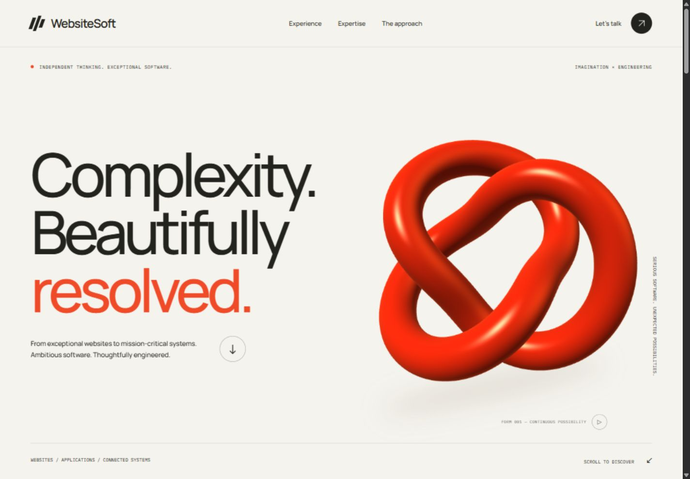
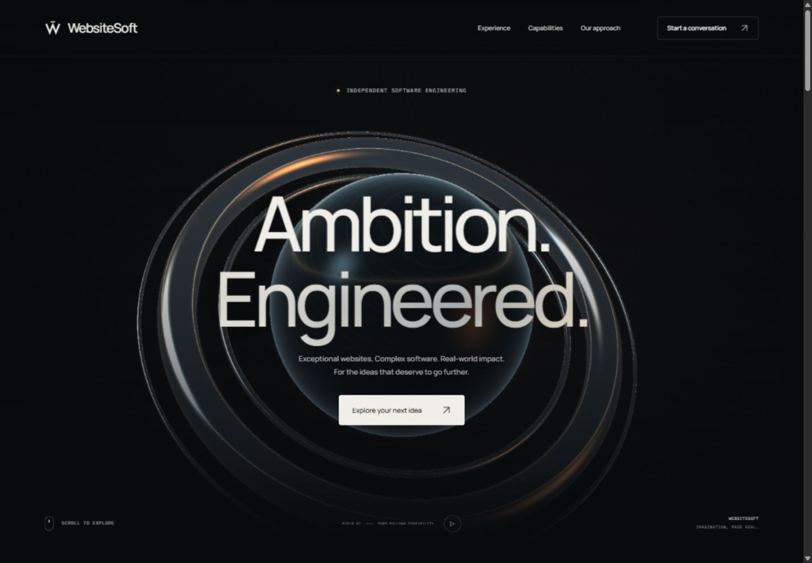
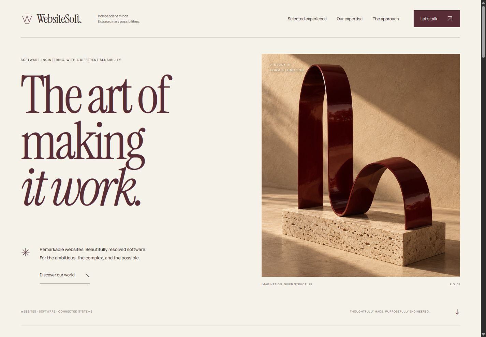
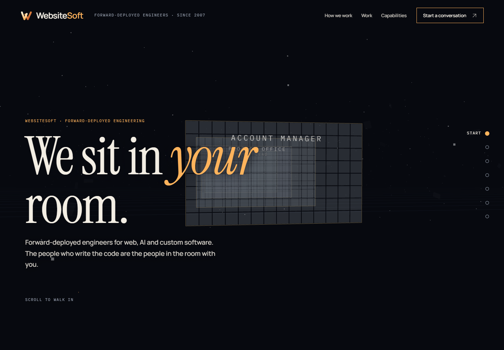
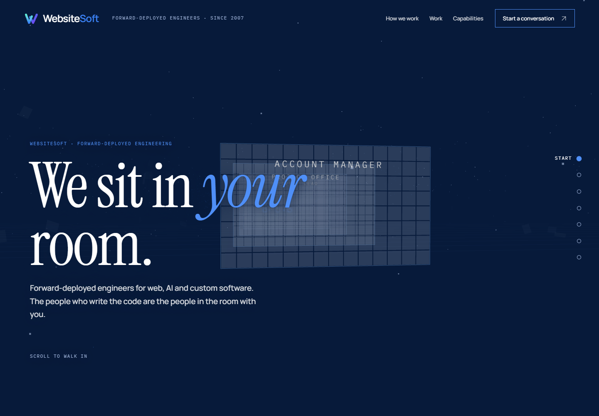

Four directions.
One ambition.
Four distinct expressions of WebsiteSoft. Explore each complete design, then compare the character, the experience, and the details.

Expressive studio
Bold typography, playful interaction, and a vivid sculptural centrepiece.
Explore this direction
Cinematic technology
Light, atmosphere, and precision. An immersive world of engineering.
Explore this direction
Refined editorial
Warm paper, expressive serif type, and carefully composed details.
Explore this direction
Spatial walk
A scroll-driven walk through a 3D space that enacts the forward-deployed argument. Built in Three.js and React.
Explore this direction
Spatial walk, LinkedIn theme
The same spatial walk in the LinkedIn palette: navy, white and brand blue, with the mark exactly as it appears on LinkedIn.
Explore this directionFor the best sense of each direction, explore beyond the first screen. Try the experience stories and interactions, and take a look on your phone too.